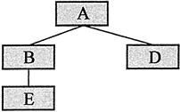

首页 > 编程笔记
C++多态到底是什么（通俗易懂）
派生类对象的地址可以赋值给基类指针。对于通过基类指针调用基类和派生类中都有的同名、同参数表的虚函数的语句，编译时并不确定要执行的是基类还是派生类的虚函数；而当程序运行到该语句时，如果基类指针指向的是一个基类对象，则基类的虚函数被调用，如果基类指针指向的是一个派生类对象，则派生类的虚函数被调用。这种机制就叫作“多态（polymorphism）”。
所谓“虚函数”，就是在声明时前面加了 virtual 关键字的成员函数。virtual 关键字只在类定义中的成员函数声明处使用，不能在类外部写成员函数体时使用。静态成员函数不能是虚函数。
包含虚函数的类称为“多态类”。
多态可以简单地理解为同一条函数调用语句能调用不同的函数；或者说，对不同对象发送同一消息，使得不同对象有各自不同的行为。
多态在面向对象的程序设计语言中如此重要，以至于有类和对象的概念，但是不支持多态的语言，只能被称作“基于对象的程序设计语言”，而不能被称为“面向对象的程序设计语言”。例如，Visual Basic 就是“基于对象的程序设计语言”。
下面是一个体现多态规则的例子。
A::Print
B::Print
D::Print
E::Print
程序中，四个类之间的派生关系如下所示。
每个类都有同名、同参数表的虚函数 Print（每个 Print 函数声明时都加了 virtual 关键字）。根据多态的规则，对于语句“pa->Print()”，由于 Print 是虚函数，尽管 pa 是基类 A 的指针，编译时也不能确定调用的是哪个类的 Print 函数。当程序运行到该语句时，pa 指向的是哪个类的对象，调用的就是哪个类的 Print 函数。
例如，程序执行到第 26 行时，pa 指向的是基类对象 a，因此调用的就是类 A 的 Print 成员函数；执行到第 28 行时，pa 指向的是类 B 的对象，因此调用的是类 B 的 Print 成员函数；第 30 行也是如此；类 E 是类 A 的间接派生类，因此，执行到第 32 行时，多态规则仍然适用，此时 pa 指向派生类 E 的对象，故调用的是类 E 的 Print 成员函数。
需要强调的是，编译器不会分析程序的运行过程。编译器并没有通过分析程序上下文，得出在第 28 行 pa 指向的是类 B 的对象，因此第 28 行应该调用类 B 的 Print 成员函数这样的结论。
多态的语句调用哪个类的成员函数是在运行时才能确定的，编译时不能确定（具体原理后面会解释）。因此，多态的函数调用语句被称为是“动态联编”的，而普通的函数调用语句是“静态联编”的。
下面是一个通过基类引用实现多态的例子。
A::Print
B::Print
第 15 条语句就是通过基类的引用调用基类和派生类中都有的同名、同参数表的虚函数，因而符合多态的规则。
第 20 行的执行过程中，Printlnfo 函数的形参 r 引用的是基类对象 a，因此调用 A::Print。
第 21 行的执行过程中，r 引用的是类 B 的对象 b，因此调用 B::Print。
第 15 行的函数调用语句每次执行时，调用的可能是不同类的 Print 成员函数，因此这条语句编译时不可能确定它到底调用的是哪个类的 Print 成员函数，即无法静态联编。
所谓“虚函数”，就是在声明时前面加了 virtual 关键字的成员函数。virtual 关键字只在类定义中的成员函数声明处使用，不能在类外部写成员函数体时使用。静态成员函数不能是虚函数。
包含虚函数的类称为“多态类”。
多态可以简单地理解为同一条函数调用语句能调用不同的函数；或者说，对不同对象发送同一消息，使得不同对象有各自不同的行为。
多态在面向对象的程序设计语言中如此重要，以至于有类和对象的概念，但是不支持多态的语言，只能被称作“基于对象的程序设计语言”，而不能被称为“面向对象的程序设计语言”。例如，Visual Basic 就是“基于对象的程序设计语言”。
下面是一个体现多态规则的例子。
#include <iostream> using namespace std; class A { public: virtual void Print() { cout << "A::Print" << endl; } }; class B : public A { public: virtual void Print() { cout << "B::Print" << endl; } }; class D : public A { public: virtual void Print() { cout << "D::Print" << endl; } }; class E : public B { virtual void Print() { cout << "E::Print" << endl; } }; int main() { A a; B b; D d; E e; A *pa = &a; B *pb = &b; pa->Print(); //多态， a.Print()被调用，输出：A::Print pa = pb; //基类指针pa指向派生类对象b pa->Print(); //b.Print()被调用，输出：B::Print pa = &d; //基类指针pa指向派生类对象d pa->Print(); //多态， d. Print ()被调用,输出：D::Print pa = &e; //基类指针pa指向派生类对象d pa->Print(); //多态， e.Print () 被调用,输出：E::Print return 0; }程序的输出结果是：
A::Print
B::Print
D::Print
E::Print
程序中，四个类之间的派生关系如下所示。

每个类都有同名、同参数表的虚函数 Print（每个 Print 函数声明时都加了 virtual 关键字）。根据多态的规则，对于语句“pa->Print()”，由于 Print 是虚函数，尽管 pa 是基类 A 的指针，编译时也不能确定调用的是哪个类的 Print 函数。当程序运行到该语句时，pa 指向的是哪个类的对象，调用的就是哪个类的 Print 函数。
例如，程序执行到第 26 行时，pa 指向的是基类对象 a，因此调用的就是类 A 的 Print 成员函数；执行到第 28 行时，pa 指向的是类 B 的对象，因此调用的是类 B 的 Print 成员函数；第 30 行也是如此；类 E 是类 A 的间接派生类，因此，执行到第 32 行时，多态规则仍然适用，此时 pa 指向派生类 E 的对象，故调用的是类 E 的 Print 成员函数。
需要强调的是，编译器不会分析程序的运行过程。编译器并没有通过分析程序上下文，得出在第 28 行 pa 指向的是类 B 的对象，因此第 28 行应该调用类 B 的 Print 成员函数这样的结论。
多态的语句调用哪个类的成员函数是在运行时才能确定的，编译时不能确定（具体原理后面会解释）。因此，多态的函数调用语句被称为是“动态联编”的，而普通的函数调用语句是“静态联编”的。
通过基类引用实现多态
通过基类的引用调用虚函数的语句也是多态的。即，通过基类的引用调用基类和派生类中同名、同参数表的虚函数时，若其引用的是一个基类的对象，则被调用是基类的虚函数；若其引用的是一个派生类的对象，则被调用的是派生类的虚函数。下面是一个通过基类引用实现多态的例子。
#include <iostream>
using namespace std;
class A
{
public:
virtual void Print() { cout << "A::Print" << endl; }
};
class B : public A
{
public:
virtual void Print() { cout << "B::Print" << endl; }
};
void Printlnfo(A & r)
{
r.Print(); //多态，调用哪个Print，取决于r引用了哪个类的对象
}
int main()
{
A a; B b;
Printlnfo(a); //输出 A::Print
Printlnfo(b); //输出 B::Print
return 0;
}
程序的输出结果是：A::Print
B::Print
第 15 条语句就是通过基类的引用调用基类和派生类中都有的同名、同参数表的虚函数，因而符合多态的规则。
第 20 行的执行过程中，Printlnfo 函数的形参 r 引用的是基类对象 a，因此调用 A::Print。
第 21 行的执行过程中，r 引用的是类 B 的对象 b，因此调用 B::Print。
第 15 行的函数调用语句每次执行时，调用的可能是不同类的 Print 成员函数，因此这条语句编译时不可能确定它到底调用的是哪个类的 Print 成员函数，即无法静态联编。
关注公众号「站长严长生」，在手机上阅读所有教程，随时随地都能学习。内含一款搜索神器，免费下载全网书籍和视频。

微信扫码关注公众号